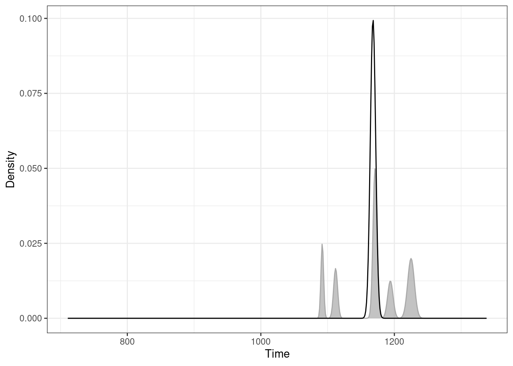
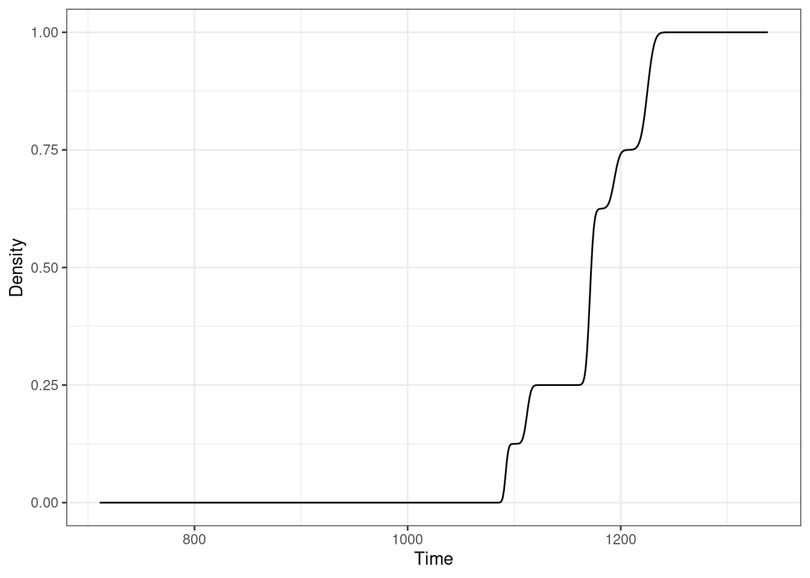
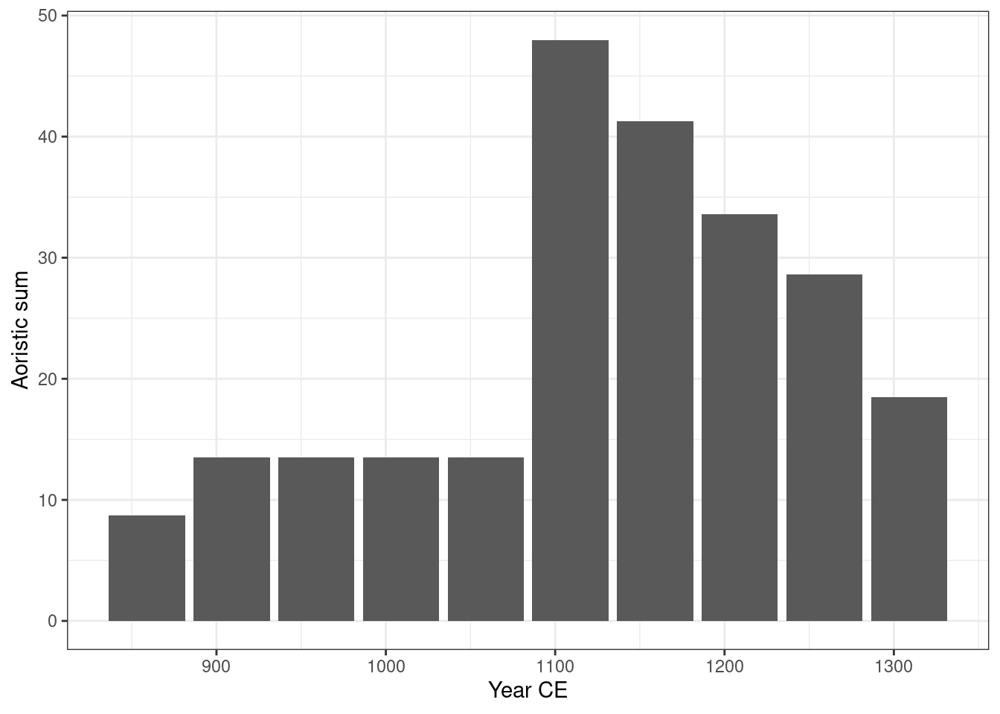
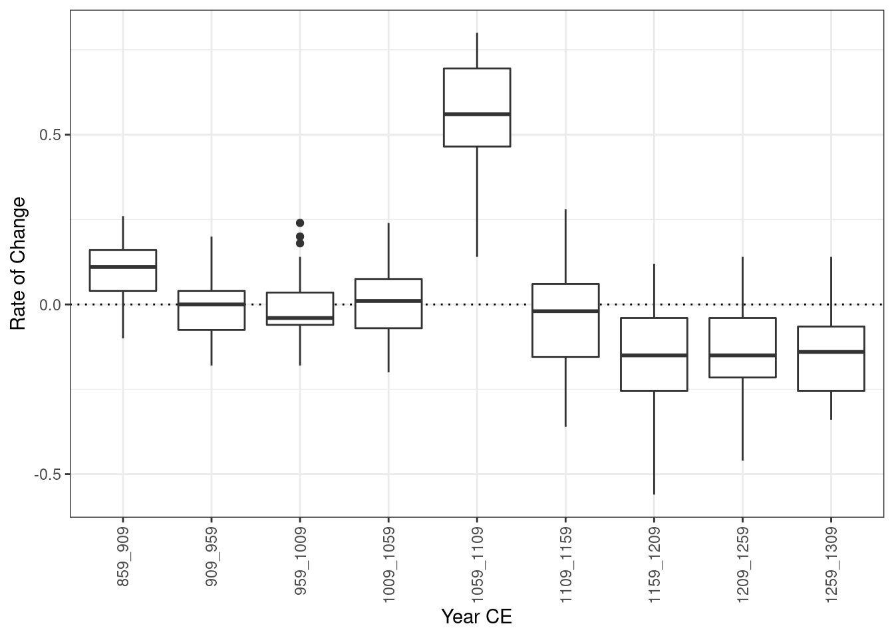

![]()
install.packages("kairos")We are delighted to announce that kairos 1.0.0 has just landed on on CRAN! kairos is a toolkit for absolute dating and analysis of chronological patterns. This package includes functions for chronological modeling and dating of archaeological assemblages from count data. It allows to compute time point estimates and density estimates of the occupation and duration of an archaeological site.
You can install it from CRAN with:
This first release includes:
- Mean ceramic date estimation (South 1977) with
mcd() - Event and accumulation date estimation (Bellanger and Husi 2012) with
event() - Aoristic analysis (Ratcliffe 2000) with
aoristic() - Chronological apportioning (Roberts et al. 2012) with
apportion()
This post highlights the basics of the package using the zuni dataset (Peeples and Schachner 2012).
library(kairos)## Load the zuni dataset
# install.packages("folio")
data("zuni", package = "folio")
## Coerce the zuni dataset to an abundance (count) matrix
zuni_counts <- as_count(zuni)
## Set the start and end dates for each ceramic type
zuni_dates <- list(
LINO = c(600, 875), KIAT = c(850, 950), RED = c(900, 1050),
GALL = c(1025, 1125), ESC = c(1050, 1150), PUBW = c(1050, 1150),
RES = c(1000, 1200), TULA = c(1175, 1300), PINE = c(1275, 1350),
PUBR = c(1000, 1200), WING = c(1100, 1200), WIPO = c(1125, 1225),
SJ = c(1200, 1300), LSJ = c(1250, 1300), SPR = c(1250, 1300),
PINER = c(1275, 1325), HESH = c(1275, 1450), KWAK = c(1275, 1450)
)Mean Ceramic Date
The Mean Ceramic Date (MCD) is a point estimate of the occupation of an archaeological site (South 1977). The MCD is estimated as the weighted mean of the date midpoints of the ceramic types found in a given assemblage. The weights are the conditional frequencies of the respective types in the assemblage.
## Calculate date midpoint for each ceramic type
zuni_mid <- vapply(X = zuni_dates, FUN = mean, FUN.VALUE = numeric(1))
## Calculate MCD
zuni_mcd <- mcd(zuni_counts, dates = zuni_mid)
head(zuni_mcd)LZ1105 LZ1103 LZ1100 LZ1099 LZ1097 LZ1096
1162 1138 1154 1091 1092 841 ## Assess the sampling error
zuni_boot <- bootstrap(zuni_mcd, level = 0.95, probs = NULL)
head(zuni_boot) min mean max lower upper
LZ1105 1100 1162.229 1220 1161.1344 1163.3236
LZ1103 1030 1139.130 1218 1137.5082 1140.7518
LZ1100 1029 1153.328 1237 1151.4411 1155.2149
LZ1099 1078 1091.061 1100 1090.7921 1091.3299
LZ1097 919 1090.436 1212 1087.1609 1093.7111
LZ1096 738 840.346 1048 836.3994 844.2926Event and Accumulation Date
Event and accumulation dates are density estimates of the occupation and duration of an archaeological site (Bellanger and Husi 2012). The event date is an estimation of the terminus post-quem of an archaeological assemblage. The accumulation date represents the “chronological profile” of the assemblage.
Event dates are estimated by fitting a Gaussian multiple linear regression model on the factors resulting from a correspondence analysis. This model results from the known dates of a selection of reliable contexts and allows to predict the event dates of the remaining assemblages.
## Assume that some assemblages are reliably dated
## (this is NOT a real example)
zuni_dates <- c(
LZ0569 = 1097, LZ0279 = 1119, CS16 = 1328, LZ0066 = 1111,
LZ0852 = 1216, LZ1209 = 1251, CS144 = 1262, LZ0563 = 1206,
LZ0329 = 1076, LZ0005Q = 859, LZ0322 = 1109, LZ0067 = 863,
LZ0578 = 1180, LZ0227 = 1104, LZ0610 = 1074
)
## Model the event and accumulation date for each assemblage
model <- event(zuni_counts, dates = zuni_dates, cutoff = 90)
## Estimate the event date of the assemblages
zuni_event <- predict_event(model, margin = 1, level = 0.95)
head(zuni_event) date lower upper error
LZ1105 1168 1158 1178 4
LZ1103 1143 1139 1147 1
LZ1100 1156 1148 1164 3
LZ1099 1099 1092 1106 3
LZ1097 1088 1080 1097 3
LZ1096 839 829 849 4The accumulation date is defined as the weighted mean of the event date of the ceramic types found in a given assemblage. The weights are the conditional frequencies of the respective types in the assemblage.
## Estimate accumulation dates
zuni_acc <- predict_accumulation(model)
head(zuni_acc)LZ1105 LZ1103 LZ1100 LZ1099 LZ1097 LZ1096
1170 1140 1158 1087 1092 875 Event and accumulation dates can be displayed as density curves (see Bellanger and Husi 2012 for the interpretation of the curves). The probability density of the event date can be approximated by a normal distribution, while the accumulation time can be estimated by a Gaussian mixture. The distribution function of the accumulation time is quite close to the definition of the tempo plot introduced by Dye (2016): an estimates of the cumulative occurrence of archaeological events.
## Activity plot
## The event date is plotted as a line
## The accumulation time is shown as a grey filled area
plot(model, type = "activity", event = TRUE, select = "LZ1105")
## Tempo plot
plot(model, type = "tempo", select = "LZ1105")

Aoristic Analysis
Aoristic analysis (Ratcliffe 2000) can be used to determine the probability of contemporaneity of archaeological sites or assemblages. The aoristic analysis distributes the probability of an event uniformly over each temporal fraction of the period considered. The aoristic sum is then the distribution of the total number of events to be assumed within this period.
## Keep only assemblages that have a sample size of at least 10
zuni_keep <- apply(X = zuni, MARGIN = 1, FUN = function(x) sum(x) >= 10)
## Calculate date ranges for each assemblage
zuni_span <- apply(
X = zuni[zuni_keep, ],
FUN = function(x, dates) range(unlist(dates[x > 0])),
MARGIN = 1,
dates = zuni_dates
)
## Coerce to a data.frame
zuni_span <- as.data.frame(t(zuni_span))
names(zuni_span) <- c("from", "to")
## Calculate aoristic sum (weights)
aorist_weigth <- aoristic(zuni_span, step = 50, weight = TRUE)
plot(aorist_weigth)
## Rate of change
roc_weigth <- roc(aorist_weigth, n = 30)
plot(roc_weigth)
References
Bellanger, Lise, and Philippe Husi. 2012. “Statistical Tool for Dating and Interpreting Archaeological Contexts Using Pottery.” Journal of Archaeological Science 39 (4): 777–90. https://doi.org/10.1016/j.jas.2011.06.031.
Dye, Thomas S. 2016. “Long-Term Rhythms in the Development of Hawaiian Social Stratification.” Journal of Archaeological Science 71 (July): 1–9. https://doi.org/10.1016/j.jas.2016.05.006.
Frerebeau, Nicolas. 2021a. Folio: Datasets for Teaching Archaeology and Paleontology. https://CRAN.R-project.org/package=folio.
———. 2021b. Kairos: Analysis of Chronological Patterns from Archaeological Count Data. https://CRAN.R-project.org/package=kairos.
Peeples, Matthew A., and Gregson Schachner. 2012. “Refining Correspondence Analysis-Based Ceramic Seriation of Regional Data Sets.” Journal of Archaeological Science 39 (8): 2818–27. https://doi.org/10.1016/j.jas.2012.04.040.
Ratcliffe, Jerry H. 2000. “Aoristic Analysis: The Spatial Interpretation of Unspecific Temporal Events.” International Journal of Geographical Information Science 14 (7): 669–79. https://doi.org/10.1080/136588100424963.
Roberts, John M., Barbara J. Mills, Jeffery J. Clark, W. Randall Haas, Deborah L. Huntley, and Meaghan A. Trowbridge. 2012. “A Method for Chronological Apportioning of Ceramic Assemblages.” Journal of Archaeological Science 39 (5): 1513–20. https://doi.org/10.1016/j.jas.2011.12.022.
South, S. A. 1977. Method and Theory in Historical Archaeology. Studies in Archeology. New York: Academic Press.
Reuse
Citation
BibTeX citation:
@online{frerebeau2021,
author = {Nicolas Frerebeau},
editor = {},
title = {Kairos 1.0.0},
date = {2021-11-10},
url = {https://www.tesselle.org/posts/2021-11-10-kairos-100},
langid = {en}
}
For attribution, please cite this work as:
Nicolas Frerebeau. 2021. “Kairos 1.0.0.” November 10, 2021.
https://www.tesselle.org/posts/2021-11-10-kairos-100.